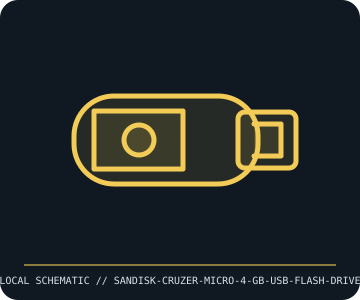

[ REMOVABLE MEDIA // INDIVIDUAL RECORD ]
SanDisk Cruzer Micro 4 GB USB Flash Drive
USB 2.0-era retractable USB-A flash drive; 4 GB capacity model. This entry describes the identified medium or reader, not a bundled drive/media pair; exact capacity and compatibility are model- and host-dependent.

IDENTIFICATION: Record the full label, manufacturer part number, revision/date code, format markings, and packaging. Product-family names alone do not identify capacity generation or supported drive.
Format and compatibility
| Catalog subcategory | Flash drives and memory cards |
|---|---|
| Catalog identity | SanDisk Cruzer Micro 4 GB USB Flash Drive |
| Format / era | USB 2.0-era retractable USB-A flash drive; 4 GB capacity model |
| Media/device distinction | This record is the removable medium only; the compatible drive is separate and not included. |
| Capacity / interface | SanDisk Cruzer Micro 4 GB removable USB flash drive; USB 2.0 interface, with actual sequential speed and controller/NAND dependent on SKU and revision. The retractable connector is part of the drive; capacity is nominal. |
| Compatibility | USB mass-storage compatible host with a working USB-A port; older systems may need OS-specific drivers or supported filesystems. USB 2.0 drives operate in compatible USB ports, but host speed, filesystem, and device health limit performance. |
| Variant caveat | Cruzer Micro was sold in multiple capacities, regional SKUs, and hardware revisions; do not infer exact model or bundled security software from the shell. Confirm label/model code and verify capacity because counterfeit/relabelled flash media exists. |
Media care and preservation
Use safe removal when writes may be cached; never unplug during writes. Avoid bending the connector, static discharge, moisture, and heat. Test full advertised capacity with a destructive write/read verification on blank media; keep checksummed backups, not a single flash copy.
- Preserve original packaging, labels, and acquisition/context notes; photograph both sides and record any write-protect state before use.
- Keep valuable contents in at least two independently verified copies on separate storage. Record a checksum and test a restore; removable media alone is not a preservation plan.
Model and version caveats
Cruzer Micro was sold in multiple capacities, regional SKUs, and hardware revisions; do not infer exact model or bundled security software from the shell. Confirm label/model code and verify capacity because counterfeit/relabelled flash media exists.
Compatibility statements are limited to the named format/model and published host support. Check manufacturer manual, firmware, regional SKU, and media generation before inserting or writing. A similar connector or cartridge shell is not proof of compatibility.
Sources & further reading
- SanDisk — Cruzer USB flash drive supportManufacturer support and product-identification entry point; select the full Cruzer Micro SKU for its revision-specific manual.
- USB Implementers Forum — USB specificationsUSB interface specifications and terminology; this product’s data rate remains subject to its USB 2.0 controller and host.
Sources identify the relevant standard, manufacturer, or product family. Where an archived SKU-specific datasheet is unavailable, the exact label/manual and supported host list take precedence over family-level marketing claims.